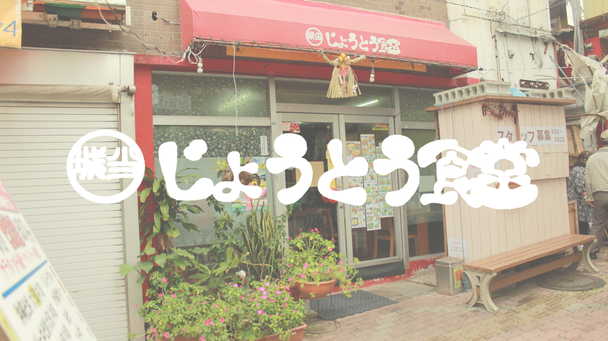
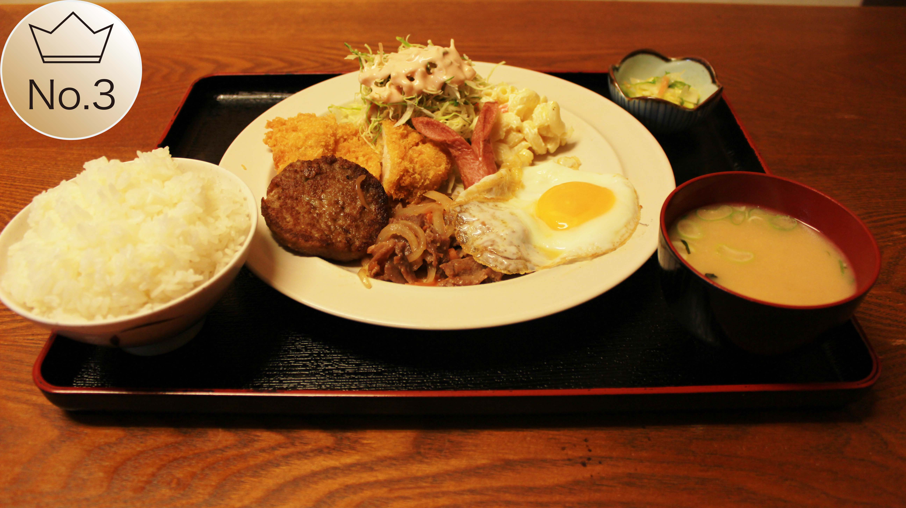

じょうとう食堂はこれまで美味しいのは勿論、温かいものを素早く提供するよう心がける素敵な食堂です。 キャッチフレーズは「愛情を込めた食事の提供を！」
じょうとうランキング
ごーやーちゃんぷるー
ゴーヤーであるが苦みがなく食べやすいのがこのメニューの最大の特徴で、リピーターも多く売り切れゴメンがよくある上に、ランニング２位のそば定食と売り上げが月１０万も差があるほど！まさにNo.1にふさわしいメニューである

そば定食
そばの麺の味は創業以来３年間、変わったことがないほどしっかりとした麺である。極み付けに麺に美味しいコシがでるよう特殊な調理を行っています。沖縄そばらしい沖縄そば！是非いかがでしょうか？

じょうとうランチ
お客さんの声から出来上がったメニューで、がっつりいきたい人向けメニュー!ごはん大盛は無料！お味噌汁は何度でもお代わりできる嬉しいサービス付き！
個別お勧めメニュー

糸満君のお勧めは生姜焼き定食！
味はちょいこってりした感じで沖縄らしい味に仕上がっています。一口食べると、ご飯がススムススム！とても美味しかったです♪

力乙君のお勧めは親子丼！
卵がトロトロしていて鶏肉ととっても合っていて美味しかったです。550円は安いと思える量と美味しさでした！
Shop Infomation
| 営業時間 | 24時間営業(月曜0～9時のみお休み) |
| 住所 | 〒900-0022 沖縄県那覇市樋川2-2-2 |
| 電話番号 | 098-832-5522 |